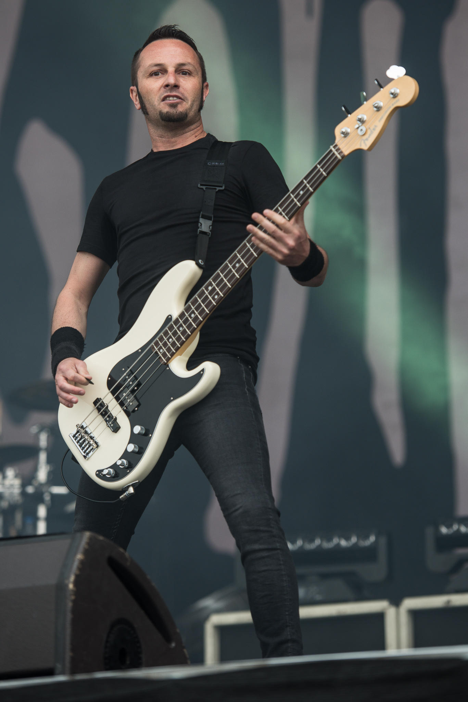

Członkowie Zespołu
| Imię | Instrument | Od kiedy w zespole | Zdjęcie |
|---|---|---|---|
| Joe Duplantier | Wokal, gitara rytmiczna | 1996 |  |
| Mario Duplantier | Perkusja | 1996 | |
| Christian Andreu | Gitara prowadząca | 1996 | |
| Jean-Michel Labadie | Gitara basowa | 1996 |  |
Dyskografia

Terra incognita
Rok wydania: 2001

The link
Rok wydania: 2003

From Mars to Sirius
Rok wydania: 2005

The way of all flesh
Rok wydania: 2008

L’Enfant Sauvage
Rok wydania: 2012

Magma
Rok wydania: 2016

Fortitude
Rok wydania: 2021